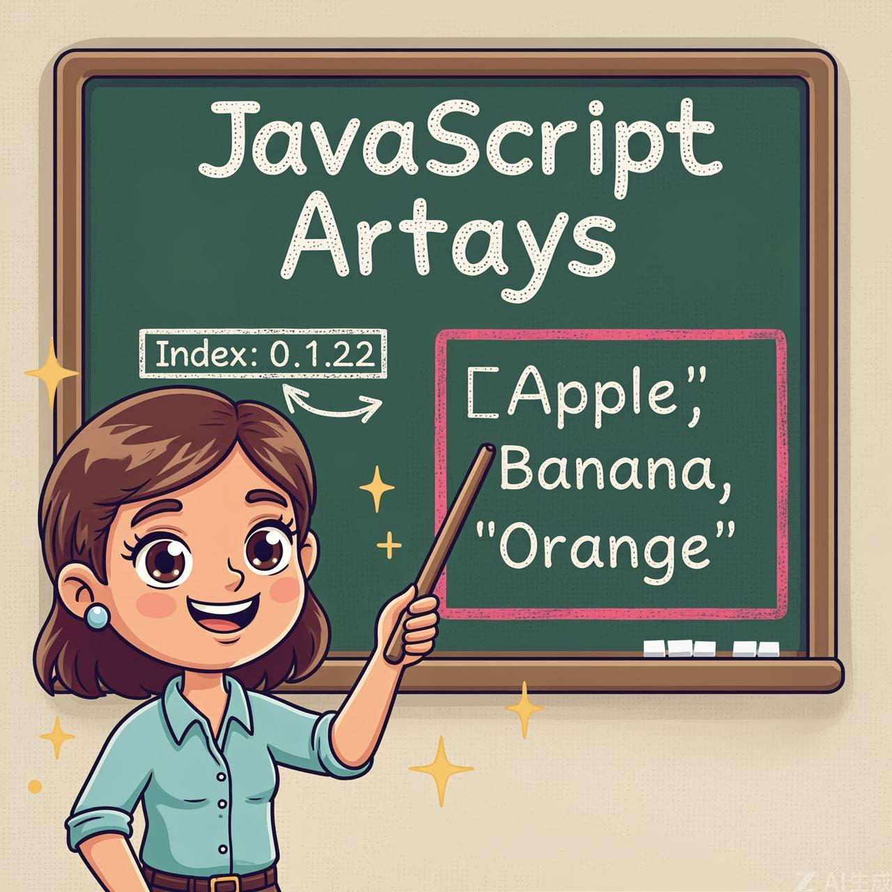

Ordered collections in JavaScript

Objects allow you to store keyed collections of values. That's fine.
But quite often we find that we need an ordered collection, where we have a 1st, a 2nd, a 3rd element and so on. For example, we need that to store a list of something: users, goods, HTML elements etc.
It is not convenient to use an object here, because it provides no methods to manage the order of elements. We can't insert a new property "between" the existing ones. Objects are just not meant for such use.
There exists a special data structure named Array, to store ordered collections.
There are two syntaxes for creating an empty array:
Almost all the time, the second syntax is used. We can supply initial elements in the brackets:
Array elements are numbered, starting with zero.
We can get an element by its number in square brackets:
We can replace an element:
...Or add a new one to the array:
The total count of the elements in the array is its length:
We can also use alert to show the whole array.
Working with different data types and syntax
An array can store elements of any type.
For instance:
An array, just like an object, may end with a comma:
The "trailing comma" style makes it easier to insert/remove items, because all lines become alike.
This style is particularly useful in version control systems (like Git), as it reduces the number of lines that change when adding or removing items from the array.
A recent addition to JavaScript
This is a recent addition to the language. Old browsers may need polyfills.
Let's say we want the last element of the array.
Some programming languages allow the use of negative indexes for the same purpose, like fruits[-1].
However, in JavaScript it won't work. The result will be undefined, because the index in square brackets is treated literally.
We can explicitly calculate the last element index and then access it: fruits[fruits.length - 1].
A bit cumbersome, isn't it? We need to write the variable name twice.
Luckily, there's a shorter syntax: fruits.at(-1):
In other words, arr.at(i):
The at() method provides a more intuitive way to access elements from the end of an array without having to manually calculate the index.
Working with array elements
A queue is one of the most common uses of an array. In computer science, this means an ordered collection of elements which supports two operations:
Arrays support both operations.
In practice we need it very often. For example, a queue of messages that need to be shown on-screen.
There's another use case for arrays – the data structure named stack.
It supports two operations:
So new elements are added or taken always from the "end".
A stack is usually illustrated as a pack of cards: new cards are added to the top or taken from the top.
For stacks, the latest pushed item is received first, that's also called LIFO (Last-In-First-Out) principle. For queues, we have FIFO (First-In-First-Out).
Arrays in JavaScript can work both as a queue and as a stack. They allow you to add/remove elements, both to/from the beginning or the end.
In computer science, the data structure that allows this, is called deque.
pop
Extracts the last element of the array and returns it:
Both fruits.pop() and fruits.at(-1) return the last element of the array, but fruits.pop() also modifies the array by removing it.
push
Append the element to the end of the array:
The call fruits.push(...) is equal to fruits[fruits.length] = ....
shift
Extracts the first element of the array and returns it:
unshift
Add the element to the beginning of the array:
Methods push and unshift can add multiple elements at once:
How arrays work under the hood
An array is a special kind of object. The square brackets used to access a property arr[0] actually come from the object syntax. That's essentially the same as obj[key], where arr is the object, while numbers are used as keys.
They extend objects providing special methods to work with ordered collections of data and also the length property. But at the core it's still an object.
Remember, there are only eight basic data types in JavaScript (see the Data types chapter for more info). Array is an object and thus behaves like an object.
For instance, it is copied by reference:
...But what makes arrays really special is their internal representation. The engine tries to store its elements in the contiguous memory area, one after another, just as depicted on the illustrations in this chapter, and there are other optimizations as well, to make arrays work really fast.
But they all break if we quit working with an array as with an "ordered collection" and start working with it as if it were a regular object.
For instance, technically we can do this:
That's possible, because arrays are objects at their base. We can add any properties to them.
But the engine will see that we're working with the array as with a regular object. Array-specific optimizations are not suited for such cases and will be turned off, their benefits disappear.
The ways to misuse an array:
Please think of arrays as special structures to work with the ordered data. They provide special methods for that. Arrays are carefully tuned inside JavaScript engines to work with contiguous ordered data, please use them this way. And if you need arbitrary keys, chances are high that you actually require a regular object {}.
Methods push/pop run fast, while shift/unshift are slow.
push()
pop()
These operations work with the end of the array and don't need to reindex other elements.
shift()
unshift()
These operations work with the beginning of the array and require reindexing all elements.
Why is it faster to work with the end of an array than with its beginning? Let's see what happens during the execution:
It's not enough to take and remove the element with the index 0. Other elements need to be renumbered as well.
The shift operation must do 3 things:
The more elements in the array, the more time to move them, more in-memory operations.
The similar thing happens with unshift: to add an element to the beginning of the array, we need first to move existing elements to the right, increasing their indexes.
And what's with push/pop? They do not need to move anything. To extract an element from the end, the pop method cleans the index and shortens length.
The actions for the pop operation:
The pop method does not need to move anything, because other elements keep their indexes. That's why it's blazingly fast.
The similar thing with the push method.
Iterating over array elements
One of the oldest ways to cycle array items is the for loop over indexes:
But for arrays there is another form of loop, for..of:
The for..of doesn't give access to the number of the current element, just its value, but in most cases that's enough. And it's shorter.
Technically, because arrays are objects, it is also possible to use for..in:
But that's actually a bad idea. There are potential problems with it:
Generally, we shouldn't use for..in for arrays.
The length property automatically updates when we modify the array. To be precise, it is actually not the count of values in the array, but the greatest numeric index plus one.
For instance, a single element with a large index gives a big length:
Note that we usually don't use arrays like that.
Another interesting thing about the length property is that it's writable.
If we increase it manually, nothing interesting happens. But if we decrease it, the array is truncated. The process is irreversible, here's the example:
So, the simplest way to clear the array is: arr.length = 0;.
Alternative array creation and nested arrays
There is one more syntax to create an array:
It's rarely used, because square brackets [] are shorter. Also, there's a tricky feature with it.
If new Array is called with a single argument which is a number, then it creates an array without items, but with the given length.
Let's see how one can shoot themselves in the foot:
To avoid such surprises, we usually use square brackets, unless we really know what we're doing.
Arrays can have items that are also arrays. We can use it for multidimensional arrays, for example to store matrices:
Multidimensional arrays are useful for representing grids, tables, or any data that has multiple dimensions.
We can create arrays with any number of dimensions:
While multidimensional arrays can be useful, be aware that deeply nested arrays can become difficult to manage. In many cases, using objects with meaningful property names might be more maintainable.
String conversion and comparing arrays
Arrays have their own implementation of toString method that returns a comma-separated list of elements.
For instance:
Also, let's try this:
Arrays do not have Symbol.toPrimitive, neither a viable valueOf, they implement only toString conversion, so here [] becomes an empty string, [1] becomes "1" and [1,2] becomes "1,2".
When the binary plus "+" operator adds something to a string, it converts it to a string as well, so the next step looks like this:
Arrays in JavaScript, unlike some other programming languages, shouldn't be compared with operator ==.
This operator has no special treatment for arrays, it works with them as with any objects.
Let's recall the rules:
The strict comparison === is even simpler, as it doesn't convert types.
So, if we compare arrays with ==, they are never the same, unless we compare two variables that reference exactly the same array.
For example:
These arrays are technically different objects. So they aren't equal. The == operator doesn't do item-by-item comparison.
Comparison with primitives may give seemingly strange results as well:
Here, in both cases, we compare a primitive with an array object. So the array [] gets converted to primitive for the purpose of comparison and becomes an empty string ''.
Then the comparison process goes on with the primitives, as described in the chapter Type Conversions:
So, how to compare arrays?
That's simple: don't use the == operator. Instead, compare them item-by-item in a loop or using iteration methods explained in the next chapter.
Never use == or === to compare arrays. They will only return true if they reference the exact same array object in memory.
Complete overview of JavaScript arrays
The declaration:
The call to new Array(number) creates an array with the given length, but without elements.
The length property is the array length or, to be precise, its last numeric index plus one. It is auto-adjusted by array methods.
Getting the elements:
We can use an array as a deque with the following operations:
To loop over the elements of the array:
To compare arrays, don't use the == operator (as well as >, < and others), as they have no special treatment for arrays. They handle them as any objects, and it's not what we usually want.
Instead you can use for..of loop to compare arrays item-by-item.
We will continue with arrays and study more methods to add, remove, extract elements and sort arrays in the next chapter Array methods.
Congratulations! You've completed the comprehensive guide to JavaScript Arrays. Keep practicing and exploring these concepts to become a JavaScript expert!